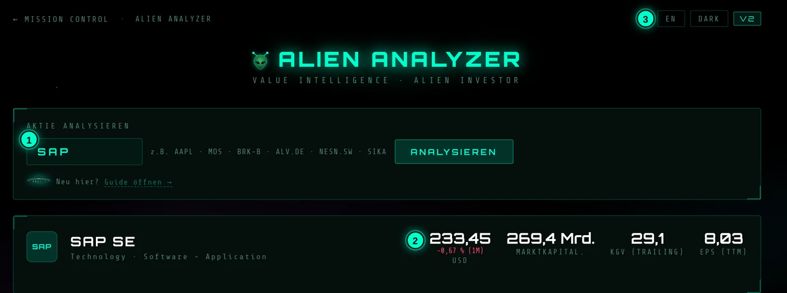
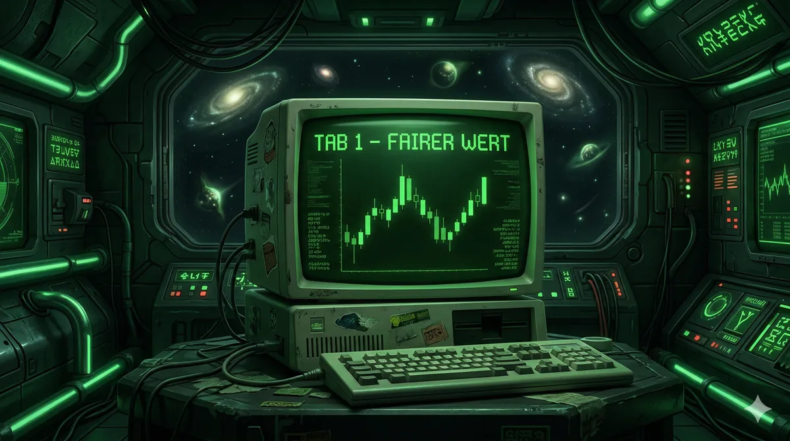
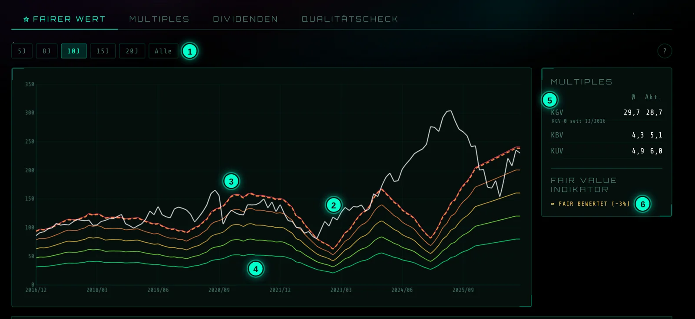
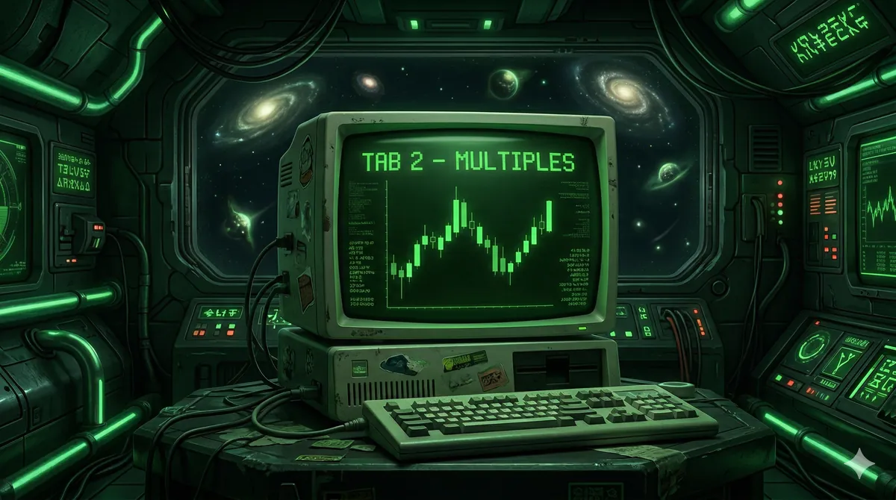
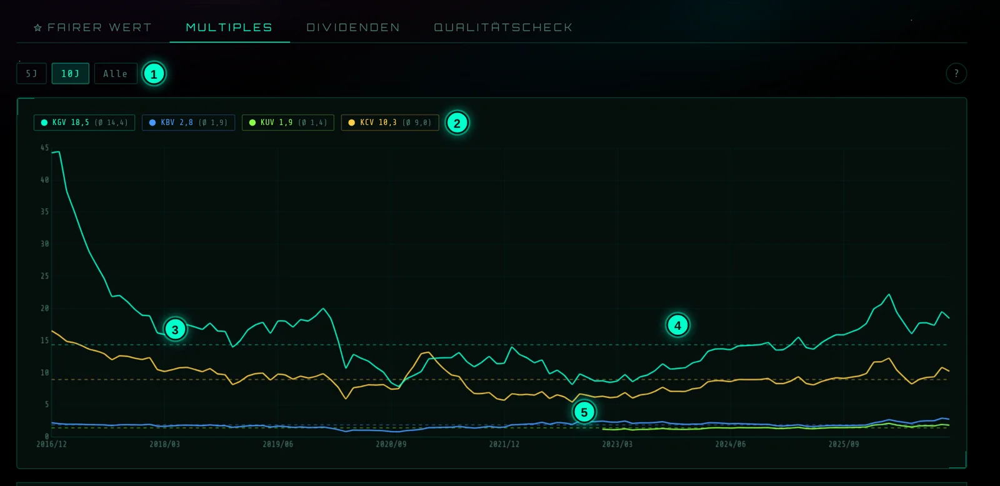
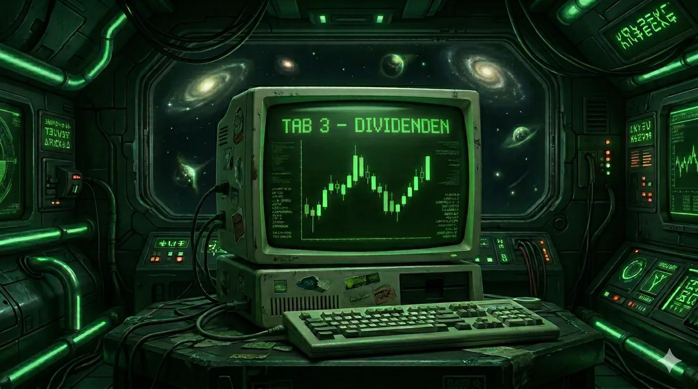
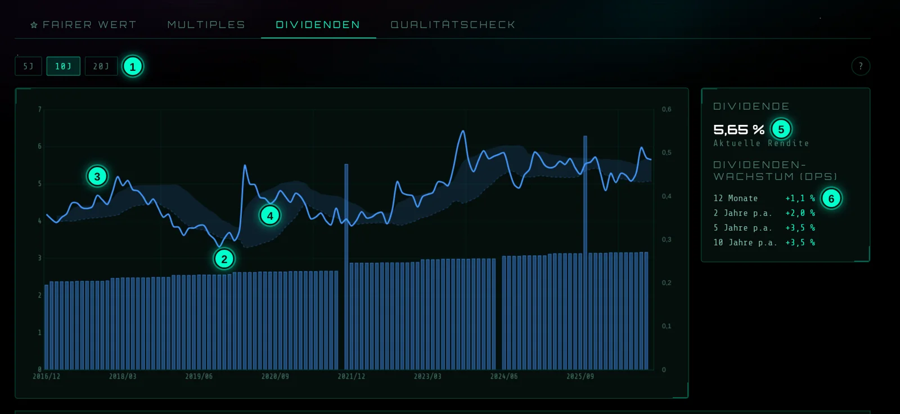
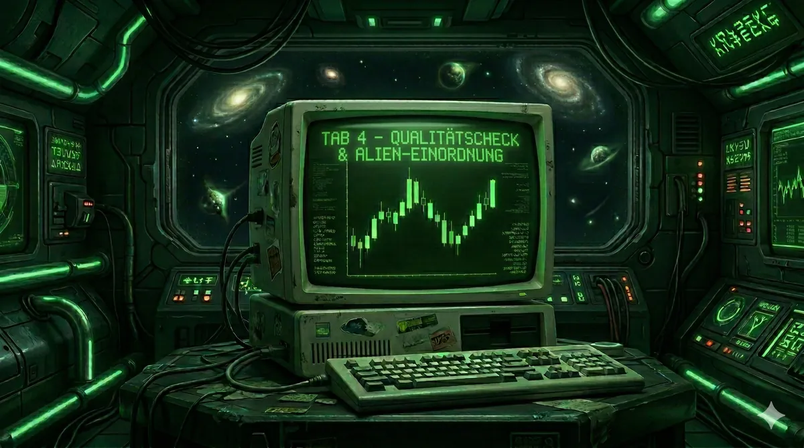
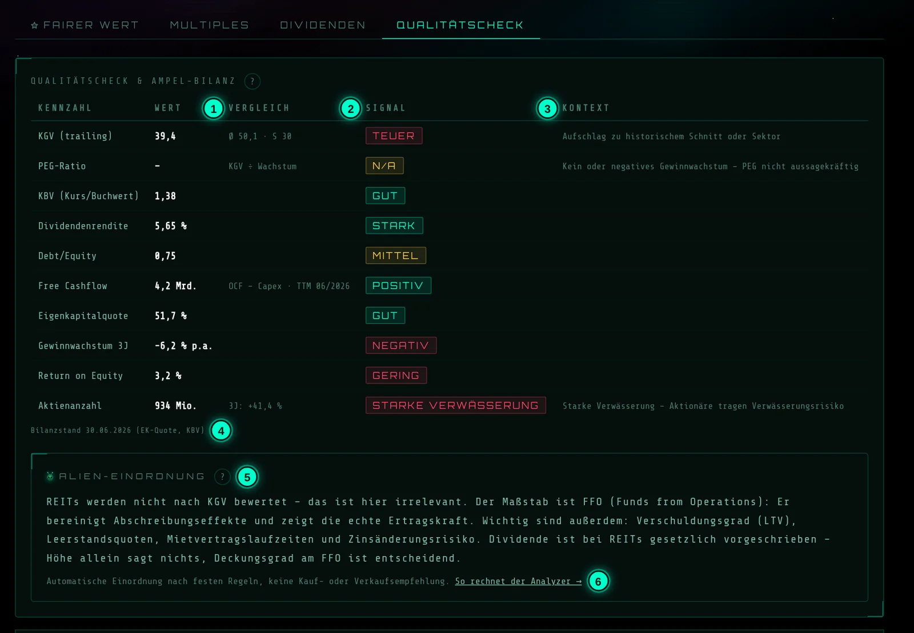

Kein Bloomberg-Terminal, kein Abo, kein Login. Der Alien Analyzer V2 ist ein kostenloses Value-Investing-Tool direkt im Browser. Ticker eingeben, und du siehst in Sekunden, wie eine Aktie im Vergleich zu ihrer eigenen Geschichte bewertet ist, was sie ausschüttet und wie solide die Zahlen dahinter sind.
Kurse und Kennzahlen kommen von Yahoo Finance. Bei Unternehmen, die Jahresberichte bei der US-Börsenaufsicht SEC einreichen, nutzt der Analyzer zusätzlich die Zahlen aus diesen Berichten. Dann reicht die Geschichte oft zehn Jahre zurück statt rund vier. Beides holt mein eigener Server ab: Dein Browser fragt keinen fremden Datendienst an, auch Schriften und Diagramm-Bibliothek kommen vom selben Server.
Schnellstart
- Aktie suchen: Ticker oder Firmennamen eintippen, etwa
SAP,ALV.DEoderNESN.SW. Beim Tippen erscheinen Vorschläge. Enter oder „Analysieren“ startet die Analyse. - Kopfzeile lesen: Kurs mit Veränderung zum Vormonat (1M), Marktkapitalisierung, KGV und Gewinn je Aktie der letzten zwölf Monate.
- Tabs durchklicken: Fairer Wert, Multiples, Dividenden, Qualitätscheck. Das kleine ? in jedem Tab springt direkt zum passenden Abschnitt dieses Guides.

- Suchfeld: Ticker oder Name, Vorschläge erscheinen beim Tippen.
- Kopfzeile: Kurs und Veränderung zum Vormonat, Marktkapitalisierung, KGV (trailing) und Gewinn je Aktie der letzten zwölf Monate (EPS ttm).
- Sprache und Darstellung: DE/EN schaltet die Sprache um, DARK/SOFT wechselt zwischen schwarzem und dunkelblauem Hintergrund.
Eine Analyse lässt sich direkt verlinken: api.alien-investor.org/alien-analyzer-v2.html?ticker=SAP
öffnet sie sofort, mit &lang=en auf Englisch.
Tab 1 – Fairer Wert

Der wichtigste Tab für Value-Investoren. Er beantwortet eine Frage: Wo stünde der Kurs, wenn der Markt die Aktie heute so bewertet wie im Mittel der letzten zehn Jahre?

- Zeitraum: 5, 8, 10, 15 oder 20 Jahre oder der ganze Verlauf. Die Knöpfe ändern nur den sichtbaren Ausschnitt. Der Fair Value rechnet immer über die letzten zehn Jahre, damit sein Ergebnis nicht vom gewählten Knopf abhängt.
- Kurs: die weiße Linie, ein Wert je Monat.
- Fair-Value-Linie: gestrichelt in Orange, der Gewinn je Aktie des jeweiligen Monats mal Median-KGV. Wer die Linie antippt, sieht den Median und den Monat, ab dem er gilt.
- KGV-Fächer: der Gewinn je Aktie mal 10, 15, 20, 25 und 30, von Grün nach Rot. Daran liest du ab, bei welchem KGV der Kurs gerade steht.
- Seitenleiste: KGV, KBV und KUV, jeweils „Ø“ (der Median) und „Akt.“ (der aktuelle Wert). „KGV-Ø seit 12/2016“ nennt den ersten Monat, der in den Median eingeht.
- Fair-Value-Indikator: das Ergebnis in einer Zeile.
Woher der Gewinn je Aktie kommt. Für jedes Geschäftsjahr nimmt der Analyzer den verwässerten Gewinn
je Aktie aus dem Jahresabschluss und verbindet die Jahre geradlinig. Nach dem letzten Abschluss führt die Linie zum
Gewinn der letzten zwölf Monate. Für jeden Monat teilt er den Kurs durch diesen Gewinn, der Median dieser
Monatswerte ist das „Ø“. Yahoo Finance liefert rund vier Geschäftsjahre. Bei Unternehmen mit Jahresberichten bei
der SEC (US-Werte, ADRs und einige Heimatbörsen wie SAP.DE) stellt der Analyzer die älteren Jahre aus
diesen Berichten davor, dann reicht die Reihe meist über die vollen zehn Jahre.
Was der Fair-Value-Indikator anzeigen kann
- ▲ … % über Fair Value oder ▼ … % unter Fair Value: Der Kurs liegt mehr als 15 % über oder unter dem Fair Value.
- ≈ fair bewertet: Kurs und Fair Value liegen höchstens 15 % auseinander.
- Kein KGV-Modell: bei REITs (dort zählt der FFO) und Rohstoffminern (dort KBV und Förderkosten), weil das KGV bei ihnen wenig aussagt.
- Verzerrt: Mehr als ein Viertel des Gewinns vor Steuern stammt nicht aus dem operativen Geschäft, etwa aus einem Beteiligungsverkauf. „Fair“ oder „unter Fair Value“ wäre dann zu günstig gerechnet. „Über Fair Value“ bleibt stehen.
- Kein fairer Wert: etwa bei Verlust in den letzten zwölf Monaten, bei weniger als drei Jahresgewinnen in Folge oder wenn der KGV-Median über 60 liegt. Der Grund steht dahinter.
Gut zu wissen
Verlustjahre: Ein einzelnes Verlust- oder fehlendes Jahr überbrückt der Analyzer. Liegen zwei oder mehr dazwischen, gibt es dort keinen KGV-Wert, und einen Fair Value zeigt er erst, wenn danach wieder drei Jahresgewinne in Folge vorliegen. Für die Zeit vor dem ersten Jahresgewinn rechnet er nichts zurück.
Tab 2 – Multiples

Ein einzelner Stichtagswert sagt wenig. Entscheidend ist, wie er sich zur eigenen Geschichte verhält. Der Tab zeigt vier Bewertungskennzahlen als Linien: KGV (Kurs ÷ Gewinn je Aktie), KBV (Kurs ÷ Buchwert je Aktie), KUV (Kurs ÷ Umsatz je Aktie) und KCV (Kurs ÷ operativer Cashflow je Aktie).

- Zeitraum: 5 oder 10 Jahre oder der ganze Verlauf. Hier ändert der Knopf auch den Ø.
- Legende: aktueller Wert und in Klammern der Ø (Median) im gewählten Zeitraum.
- Linie: der Monatswert der Kennzahl, hier das KGV.
- Gestrichelte Linie: der Ø in derselben Farbe.
- Späterer Beginn: Das KUV von Exxon beginnt erst 2023. Für ältere Jahre passten die Umsatzzahlen aus den SEC-Berichten nicht zu denen von Yahoo Finance, das ist bei Öl- und Gaskonzernen häufig. Dann rechnet der Analyzer dort nichts.
So rechnet der Analyzer. Gewinn, Buchwert, Umsatz und operativen Cashflow je Aktie bildet er für jedes Geschäftsjahr mit der Aktienzahl dieses Jahres, nicht mit der heutigen. Sonst sähen Unternehmen, die eigene Aktien zurückkaufen, in der Vergangenheit billiger aus, als sie waren. Nach dem letzten Abschluss folgen die jüngsten Quartalsbilanzen sowie Umsatz und Cashflow der letzten zwölf Monate.
„Ø“ ist überall der Median der Monatswerte, nicht der Mittelwert: Ein paar Ausreißer verschieben ihn kaum. Beim KGV zählen nur Monatswerte über 3, Ausreißer nach oben (über dem 2,5-Fachen des Medians, mindestens 50) fallen heraus. Liegt der Median von KBV, KUV oder KCV über 100, zeigt der Analyzer keinen Ø.
Gut zu wissen
Fällt ein großer Teil der KGV-Werte heraus, etwa nach hohen Abschreibungen, zeigt der Tab einen gelben Hinweis. Die Aktie passt dann möglicherweise schlecht in ein reines KGV-Raster. Bei Banken zeigt der Analyzer keinen KCV-Ø: Ihr operativer Cashflow schwankt vor allem mit den Handelsbeständen.
Tab 3 – Dividenden

Für Dividendeninvestoren der wichtigste Tab: Was zahlt das Unternehmen, wie hoch ist die Rendite im Vergleich zu früher, und wächst die Dividende?

- Zeitraum: 5, 10 oder 20 Jahre.
- Balken: die Dividende je Aktie im Monat des Ex-Tags (rechte Achse).
- Rendite: die Dividenden der letzten zwölf Monate geteilt durch den Kurs des Monats (linke Achse).
- Korridor: Das blaue Band zeigt, wie stark die Rendite im Jahr davor um ihren Mittelwert schwankte (Mittelwert ± eine Standardabweichung).
- Aktuelle Rendite: die Zahlungen der letzten zwölf Monate geteilt durch den aktuellen Kurs.
- Dividendenwachstum: wie sich diese Zwölfmonatssumme verändert hat, gegenüber vor zwölf Monaten und als jährliche Rate über 2, 5 und 10 Jahre.
Gut zu wissen
Zwölf Monate statt „letzte Jahresdividende“: Der Analyzer zählt alle Zahlungen, deren Ex-Tag in den letzten zwölf Monaten liegt, mit etwas Spielraum für verschobene Termine. Liegt derselbe Zahlungstermin dadurch zweimal im Fenster, zählt nur der jüngere. Ohne Zahlung in zwölf Monaten zeigt die Linie keine Rendite, etwa wenn ein Unternehmen die Dividende ausgesetzt hat.
Lücke und doppelt hoher Balken: Bei Realty Income lag ein Ex-Tag am 1. November 2021 statt Ende Oktober. Der Oktober bleibt deshalb leer, der Balken im November enthält zwei Zahlungen.
ADRs und Doppel-Listings: Für einige US-Listings ausländischer Unternehmen, deren Dividendenreihe bei Yahoo Finance Lücken hat, rechnet der Analyzer die Zahlungen der Heimatbörse mit dem Devisenkurs am Ex-Tag und, bei ADRs, der Zahl der Aktien je ADR um (ein Doppel-Listing wie Enbridge ist dieselbe Aktie). In der Seitenleiste steht dann „Dividenden aus … umgerechnet“.
Tab 4 – Qualitätscheck

Zahlen allein reichen nicht. Der Qualitätscheck sortiert zehn Kennzahlen in eine Ampeltabelle, jede mit einem klaren Signal.

- Vergleich: woran der Wert gemessen wird, beim KGV der eigene Ø und das Branchen-KGV („S“).
- Signal: die Ampel nach festen Schwellen je Kennzahl. Grün ist das bessere Ende der Skala, Rot das schlechtere, Gelb liegt dazwischen oder markiert einen Sonderfall. „N/A“ heißt: Die Kennzahl passt hier nicht oder es fehlen Daten.
- Kontext: ein kurzer Satz zum Signal.
- Bilanzstand: der Stichtag der Bilanz, aus der Eigenkapitalquote und KBV stammen. Er kann älter sein als die Gewinnzahlen.
- Alien-Einordnung: der Text zur Aktie, siehe nächster Abschnitt.
- Hinweis: „Automatische Einordnung nach festen Regeln, keine Kauf- oder Verkaufsempfehlung“, mit Link zu allen Regeln.
| Kennzahl | Was sie zeigt |
|---|---|
| KGV (trailing) | Kurs ÷ Gewinn je Aktie der letzten zwölf Monate, verglichen mit dem eigenen Ø und dem Branchen-KGV. |
| PEG-Ratio | KGV ÷ jährliches Gewinnwachstum. Ohne Wachstum kein Wert. |
| KBV | Kurs ÷ Buchwert je Aktie. Buchwert ist das Eigenkapital der Stammaktionäre: ohne Vorzugsaktien mit festem Anspruch (etwa bei US-Banken), bei vielen Banken auch ohne AT1-Kapital. |
| Dividendenrendite | Zahlungen der letzten zwölf Monate ÷ Kurs, wie im Tab Dividenden. |
| Debt/Equity | Schulden im Verhältnis zum Eigenkapital. |
| Free Cashflow | Operativer Cashflow minus Investitionen, meist der letzten zwölf Monate (Stand unter „Vergleich“). Bei Banken und BDCs „N/A“. |
| Eigenkapitalquote | Eigenkapital ÷ Bilanzsumme. |
| Gewinnwachstum 3J | Jährliches Wachstum des Gewinns je Aktie über die letzten Geschäftsjahre. |
| Return on Equity | Gewinn ÷ Eigenkapital. |
| Aktienanzahl | Veränderung der Aktienzahl, der Zeitraum steht unter „Vergleich“: Rückkäufe ab 5 % weniger, stabil oder Verwässerung bis 20 %, starke Verwässerung über 20 %. |
Gut zu wissen
Bläht ein Sondereffekt den Gewinn auf, steht beim KGV und bei einer hohen Eigenkapitalrendite „VERZERRT“. Ein „TEUER“ beim KGV bleibt stehen. Bei Banken bewertet der Qualitätscheck den freien Cashflow nicht („N/A (BANK)“), ebenso bei BDCs, die den Kauf ihrer Anlagen im operativen Cashflow verbuchen.
Alien-Einordnung
Unter der Ampeltabelle steht die Alien-Einordnung: ein automatisch erzeugter Text, der beschreibt, wo die Aktie im historischen Vergleich steht und was bei diesem Unternehmen anders zu lesen ist. Dafür erkennt der Analyzer Sonderfälle in einer festen Reihenfolge, spezielle vor allgemeinen, zum Beispiel:
- REITs: Das KGV ist verzerrt durch Abschreibungen, Maßstab ist der FFO.
- Banken: niedrige Eigenkapitalquote ohne Warnsignal, dazu bankeigene Kennzahlen wie Zinsmarge und Kernkapitalquote.
- BDCs: Nettoinventarwert (NAV) und wie gut der Nettoanlageertrag (NII) die Dividende deckt.
- Rohstoffunternehmen und Düngemittelhersteller: Zyklische Gewinne verzerren die Multiples.
- Royalty-Gesellschaften, Pipelines, Luxusmarken: Geschäftsmodelle mit eigener Bewertungslogik.
- Bitcoin-Vehikel wie Strategy (MSTR): kein klassisches Unternehmen, der Maßstab ist der Abstand zum Bitcoin-Bestand. Den rechnet der Analyzer nicht, weil er die Zahl der gehaltenen Bitcoins nicht einliest. Er zeigt das KBV: Der Buchwert besteht überwiegend aus Bitcoin und Barmitteln, abzüglich Schulden und Vorzugsaktien.
Die Einordnung beschreibt, sie empfiehlt nicht. Sie kennt weder dich noch deine Ziele. Alle Regeln und Schwellen stehen auf der Methodenseite: So rechnet der Analyzer.
Häufige Fragen
Welche Aktien kann ich analysieren?
Alles mit einem Ticker bei Yahoo Finance: US-Aktien direkt (AAPL), andere Börsen mit Kürzel,
etwa .DE für Xetra, .SW für Zürich, .L für London, .PA für
Paris, .AS für Amsterdam oder .T für Tokio. Bei einigen Zweitlistings mit lückenhaften
Daten weist ein Fenster auf das Hauptlisting hin.
Warum weicht der KGV-Schnitt von anderen Seiten ab?
Andere Seiten nehmen oft den Mittelwert statt des Medians, einen anderen Zeitraum, den unverwässerten Gewinn oder einen Gewinn ohne Sondereffekte. Ohne SEC-Berichte reicht die Reihe im Analyzer außerdem nur rund vier Jahre zurück. Der Schnitt bildet dann oft nur einen Teil eines Zyklus ab.
Was bedeutet „KGV-Ø seit 01/2023“?
Ab diesem Monat gibt es echte Gewinnzahlen, davor rechnet der Analyzer keinen Gewinn zurück. Liegt der Monat deutlich später als vor zehn Jahren, stützt sich der Ø auf entsprechend weniger Jahre, meist weil es keine SEC-Berichte gibt (etwa bei Nestlé oder LVMH).
Warum ändert sich der Fair Value nicht, wenn ich den Zeitraum wechsle?
Das ist Absicht. Der Fair Value rechnet immer über die letzten zehn Jahre, die Knöpfe ändern nur den sichtbaren Ausschnitt. So hängt das Ergebnis nicht davon ab, welchen Knopf du zuletzt gedrückt hast. Im Tab Multiples dagegen folgt der Ø dem gewählten Zeitraum.
Warum zeigt der Analyzer keinen Fair Value?
Bei REITs und Rohstoffminern sagt das KGV wenig, dort gibt es kein KGV-Modell. Sonst fehlt der Fair Value etwa bei Verlust in den letzten zwölf Monaten, bei weniger als drei Jahresgewinnen in Folge oder wenn der KGV-Median über 60 liegt. Der Fair-Value-Indikator nennt jeweils den Grund.
Wer sieht, welche Aktien ich mir ansehe?
Es gibt kein Konto und keine Anmeldung. Dein Browser lädt Seite, Schriften und Daten nur von meinem Server. Welche Ticker abgerufen werden, sieht also mein Server; Yahoo Finance und die SEC bekommen nur seine Abrufe, nicht deine. Sprache und Darstellung speichert dein Browser lokal.
Ist das eine Anlageempfehlung?
Nein. Der Analyzer rechnet nach festen Regeln und beschreibt, wo Kennzahlen im historischen Vergleich stehen. Er kennt deine Situation nicht, und Daten können fehlerhaft sein. Er ist ein Scan-Tool für den ersten Blick, kein Ersatz für eigene Recherche.
Ich habe einen Fehler gefunden. Was tun?
Unten im Analyzer steht „Bug melden“. Das öffnet ein kleines Formular mit dem Ticker, „Senden“ macht daraus eine vorbereitete E-Mail an mich. Ein Satz, was dir aufgefallen ist, genügt.
Fazit
Der Alien Analyzer V2 ist kein Ersatz für eigene Recherche und kein Handelssignal. Er ist ein Scan-Tool: schnell, kostenlos, ohne Registrierung. Ticker eingeben, vier Tabs durchklicken, und du weißt, wo eine Aktie gegenüber ihrer eigenen Geschichte steht, bevor du tiefer recherchierst.
Vertraue niemandem – manage deine Finanzen selbst.
Das Tool ist kostenlos und direkt im Browser nutzbar, ohne Login und ohne Abo:
Zum Alien Analyzer V2 →